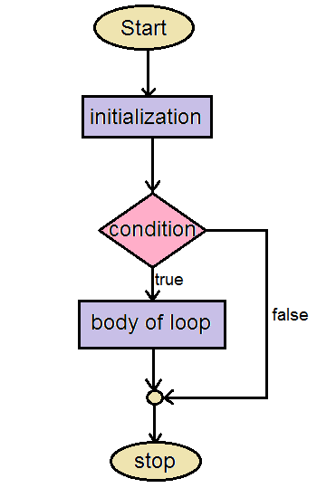

Iteration#
Introduction to computer programming
Management and Artificial Intelligence

Iteration#
- Iteration is the process where a set of instructions (or statements) is executed repeatedly for a specified number of time or until a condition is met.
- Like branching, these statements also alter the control flow of the program.

while loops#
while <condition>:
statement
statement
...
statement
<condition>evaluates to a Boolean (TrueorFalse)if
<condition>isTrue, then execute all statements inside thewhileblockevaluate
<condition>againrepeat until
<condition>isFalse
Example#
%%script echo skipping
n = input("You are in the Lost Forest. Go Left or Right?: ")
while n == "Right":
n = input("You are in the Lost Forest. Go Left or Right?: ")
print("You are out of the Lost Forest.")
skipping
for loops#
for <variable> in range(<number>):
statement
statement
...
statement
each time through the loop,
<variable>takes some value<variable>starts from the smallest value (usually,1)next time,
<variable> = <variable> + 1
The range() function#
The range(start, stop, step) function returns a sequence of numbers, starting from start, and increments by step, and stops at stop-1.
Keep in mind the following caveats:
stopis mandatorystepis optional: if not provided, it defaults to1startis optional: if not provided, it defaults to0
Examples:
mysum = 0
for i in range(7, 10):
mysum = mysum + i
print(mysum)
24
mysum = 0
for i in range(5, 11, 2):
mysum = mysum + i
print(mysum)
21
for vs. while loops#
Iterate through sequence of numbers in [0, 5):
With a
whileloop:
n = 0
while n < 4:
print(n)
n = n + 1
0
1
2
3
With a
forloop:
for n in range(4):
print(n)
0
1
2
3
Main difference#
- known number of iterations
- can end early via
break - (natively) uses a counter
- you can rewrite a
forloop using awhileloop
- unbounded number of iterations
- can end early via
break - you can use a counter, but you must initialise it before the loop and increment it inside the loop
- you may not be able to rewrite a
whileloop using aforloop
More on for loops#
for loops can be used to iterate over other data structures (e.g., lists or dictionaries*).
Example: print all functions in the math module that contain the word ‘log’;
import math
for f in dir(math):
if 'log' in f:
print(f)
print("Done!")
log
log10
log1p
log2
Done!
dir() returns a list.* We will see lists and dictionaries later in the course
Nested Loops#
We know that branching (i.e., if) statements can be arbitrarily nested. The same holds for loops.
Example:
mysum = 0
for i in range(3):
for x in range(2):
mysum += i
print(mysum)
6
mysum += i is the same as mysum = mysum + ibreak statement#
The break statement:
immediately exits whatever loop is it in
all further statements in the block are skipped
exits only the innermost loop
usually triggered at given condition
while <condition_1>:
while <condition_2>:
<statement_a>
break # exits inner loop
<statement_b> # never executed
<statement_c>
Example#
mysum = 0
for i in range(5, 11, 2):
mysum += i
if mysum == 5:
break
mysum += i
print(mysum)
5
What’s going on here?
Nested loops with break, an example:#
mysum = 0
for i in range(30):
for n in range(20):
if n > 2:
break
mysum += i
if i>1:
break
print(mysum)
9
What’s going on here?
Exercises#
Exercise 1: Coin flipping#
Ask the user how many coin tosses have to be performed
Keep track of the number of times we get heads and tails
We assume a fair coin (i.e., unbiased 50% change of getting head and tail at each toss)
random.randint() function to simulate a single coin toss.import random
tail = 0
head = 0
n = 3 # number of coin tosses
# n = int(input("How many coin tosses? "))
for i in range(n):
x = random.randint(1, 100)
if x > 50:
head = head + 1
else:
tail = tail + 1
print("Number of heads: ", head)
print("Number of tails: ", tail)
Number of heads: 2
Number of tails: 1
Exercise 2: Sum of sequence#
Write a function named rolling_sum() that:
repeatedly asks the user to insert a number
we assume integer numbers
keeps track of the sum of the numbers inserted so far
if the user inserts 0, then exit and return the sum
%%script echo skipping
def rolling_sum():
this_number = int(input("Insert a number: "))
my_sum = this_number
while this_number != 0:
this_number = int(input("Insert a number: "))
my_sum = my_sum + this_number
return my_sum
print("Total sum is: ", rolling_sum())
skipping
Exercise 3: Odd or even?#
Write a function named odd_or_even() that:
accepts an integer number, say n
prints the number of odd numbers in range [1,n] (i.e., both included)
prints the number of even numbers in range [1,n] (i.e., both included)
def odd_or_even(n):
odd = 0
even = 0
for i in range(1, n + 1):
if i % 2 == 0:
even += 1
else:
odd += 1
print("Number of odd elements: ", odd)
print("Number of even elements: ", even)
odd_or_even(10)
Number of odd elements: 5
Number of even elements: 5
Exercise 4: The Fibonacci Sequence#
Write a function named fibonacci1() that:
accepts an integer number, say n
prints the first n elements of the Fibonacci sequence.
0 and 1) and then the proper sequence starts: 0, 1, 1, 2, 3, 5, 8, 13, 21, ...def fibonacci1(n):
second_to_last = 0
last = 1
print(second_to_last)
print(last)
for i in range(n - 2):
new = last + second_to_last
print(new)
second_to_last = last
last = new
fibonacci1(10)
0
1
1
2
3
5
8
13
21
34
Exercise 5: Multiples#
Write a function named multiples() that:
accepts an integer number, say n
iterates the integers in [1, n]
for multiples of 3, print
'Mult3'instead of the numberfor multiples of 5, print
'Mult5'instead of the numberfor multiples of 5 and 3, print
'Mult35'instead of the number
def multiples(n):
for num in range(1, n + 1):
if num % 3 == 0 and num % 5 == 0:
print("Mult35")
elif num % 3 == 0:
print("Mult3")
elif num % 5 == 0:
print("Mult5")
else:
print(num)
multiples(15)
1
2
Mult3
4
Mult5
Mult3
7
8
Mult3
Mult5
11
Mult3
13
14
Mult35
Exercise 6: Print a subset#
Write a function named print_subset() that:
accepts an integer number, say n
accepts an integer number, say m <= n
scans all integer numbers in range [1, n], but prints all numbers in range [1, m]
Solution 1#
def print_subset(n, m):
for num in range(1, n + 1):
if num <= m:
print(num)
print_subset(5, 3)
1
2
3
Solution 2#
def print_subset(n, m):
for num in range(1, n + 1):
print(num)
if num == m:
break
print_subset(5, 3)
1
2
3
Exercise 7: Primality test#
Write a function named smallerPrimes() that:
accepts a positive integer number, say n
prints all positive integer prime numbers smaller than n
def is_prime(num):
if num <= 1:
return False
for i in range(2, int(num/2) + 1):
if num % i == 0:
return False
return True
def smallerPrimes(n):
for i in range(2, n):
if is_prime(i):
print(i)
smallerPrimes(20)
2
3
5
7
11
13
17
19
Exercise 8: Pythagorean triples#
Write a function named pythagoreanTriples() that:
accepts an integer positive number, say n
prints all x and y pairs such that x2 + y2 = n2
def pythagoreanTriples(n):
for x in range(1, n):
for y in range(1, n):
if x**2 + y**2 == n**2:
print(x, y)
pythagoreanTriples(5)
3 4
4 3